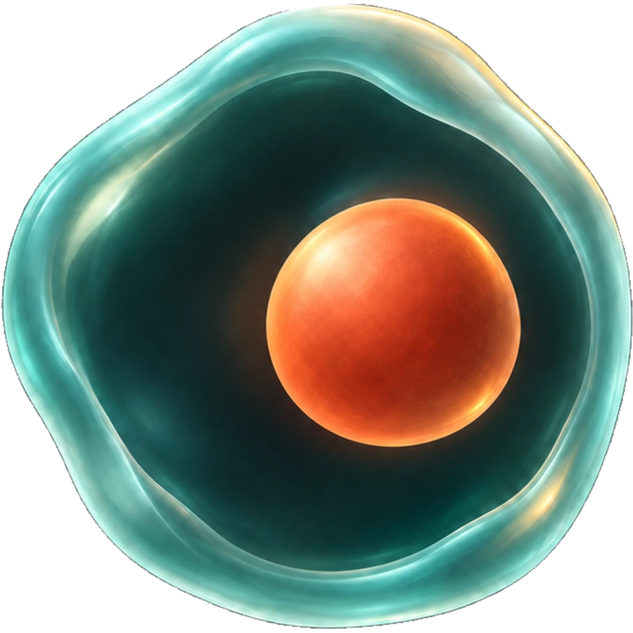
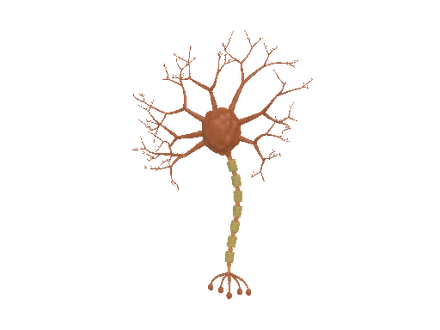
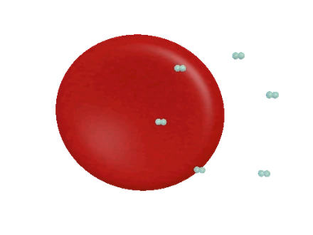
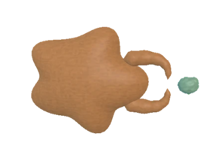
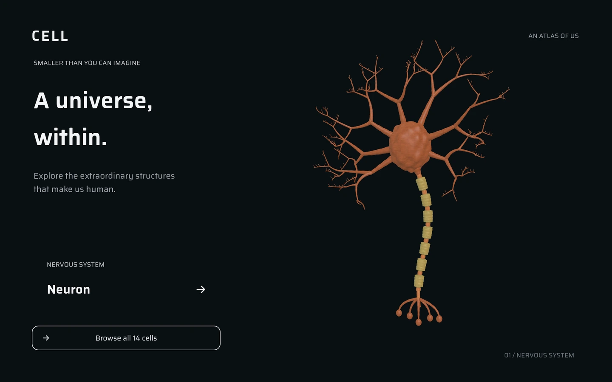
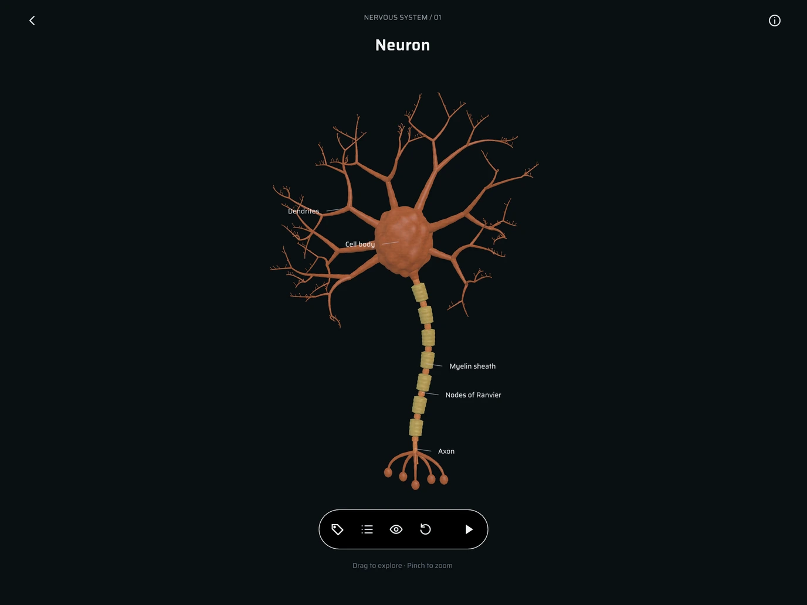
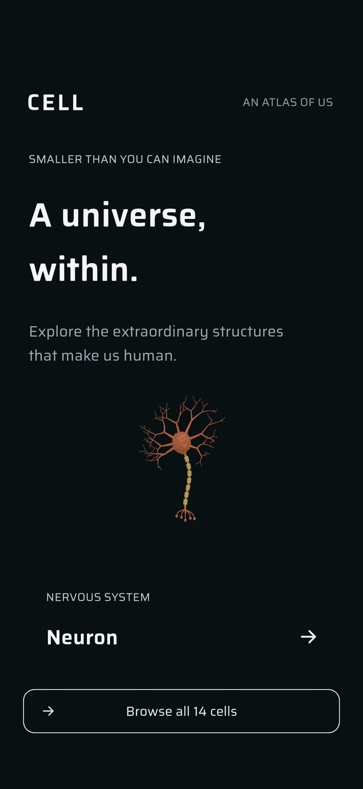
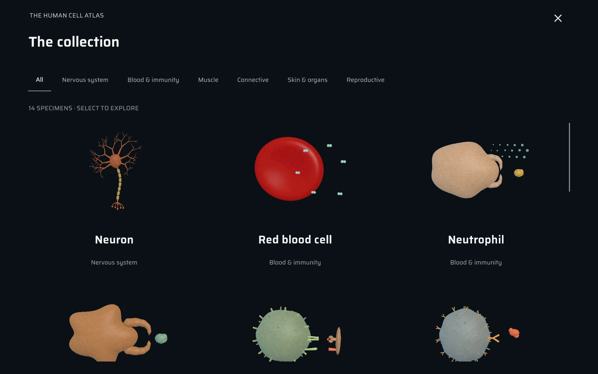
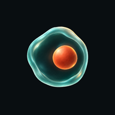

Find your own angle.
Rotate, pan, and zoom through a living world in 3D. Turn on labels, choose a structure, then focus on it or view it in isolation.
Smaller than you can imagine
Explore the extraordinary structures
that make us human.
Built for iPhone, iPad, Mac & Android

The human cell atlas
From a branching neuron to an oxygen-carrying red blood cell, discover 14 cell types and the work they do inside us.



Rotate, pan, and zoom through a living world in 3D. Turn on labels, choose a structure, then focus on it or view it in isolation.
Switch between exterior, transparent, cutaway, and interior views. Open deeper detail scenes where they’re available.
Press play to follow simplified biological processes. Pause when something catches your eye, then explore at your own pace.
Room for curiosity
A quiet interface gives each specimen space. Explore with a mouse on Mac or get closer with touch on your phone and tablet.


The atlas works offline. Scientific references are one tap away when you’re connected.

14 ways to be a cell
Explore the nervous system, blood and immunity, muscle, connective tissue, skin and organs, and reproductive cells.
Models simplify biological shapes, proportions, and timing to make structures and processes easier to explore. Each specimen includes explanatory notes and scientific sources.
About the models

Start with a single cell
{kind=link}
{kind=link}